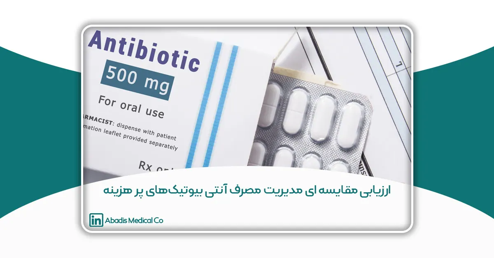
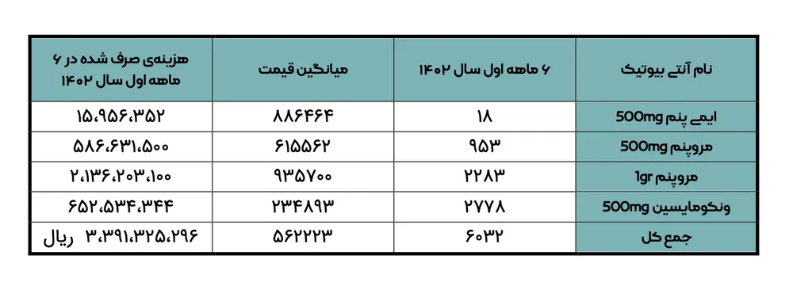
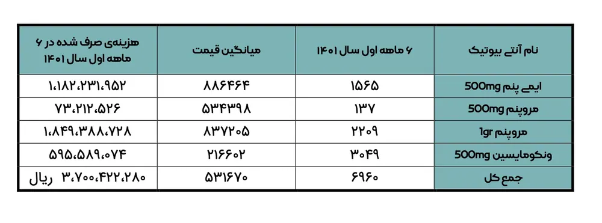

این مقاله توسط جناب آقای علی روکا، سرکارخانم رویا ذاکری، سرکارخانم طیبه رضایی و جناب آقای قنبر گلدوست نوشته شده؛ و برای یازدهمین کنگره کنترل عفونت ارسال شده است.
مقدمه
تلاش برای منطقی کردن مصرف دارو به عنوان یکی از موارد مهم سیاست گذاریهای دارویی همواره مورد توجه بوده است. طبق نظر سازمان جهانی بهداشت جهت دستیابی به مصرف منطقی دارو نیاز به استفاده از داروهایی با اثر درمانی مناسب میباشد که بتواند نیازهای بالینی بیماران را در محدوده زمان جغرافیایی خاص با کمترین عوارض و کمترین هزینه برطرف نماید ضمن اینکه توجه به دوز و مدت زمان مصرف دارو از اهمیت بالایی برخوردار میباشد. در بسیاری از کشورها آنتیبیوتیکها در حدود 30 تا 50 درصد داروهای تجویزی در بین عوامل درمانی را شامل میشود. علیرغم اینکه تجویز آنتیبیوتیک در بیشتر عفونتهای باکتریایی ضروری است و عدم مصرف آن باعث تهدید زندگی بیمار میشود اما اغلب مطالعات نشان داده است 30 تا 60 درصد موارد تجویزی نادرست و نامناسب بوده است که معمولا این اشتباهات توسط پزشک و توزیع کنندگان و یا خود درمانی صورت گرفته است افزایش گونههای مقاوم و کاهش کارایی آنتیبیوتیکها نیز باعث تحمیل هزینههای هنگفتی به سیستم بهداشتی شده است و از آنجایی که بیشترین بروز مقاومت در کشورهایی که بیشترین مصرف را داشتهاند رخ داده است لزوم اجرای سیاستهای جدید و موثر برای کنترل مصرف بیرویه آنتیبیوتیکها در سراسر جهان ضروری است. با توجه به اینکه کاهش مصرف آنتیبیوتیکهای پرهزینه که وسیع الطیف هستند باعث کاهش مقاومتهای آنتیبیوتیکی نیز خواهد شد. لذا این مطالعه با هدف اجرا و ارزیابی برخی تدابیر در جهت کاهش مصرف این آنتیبیوتیکها انجام گردید.
روش کار
این یک مطالعه توصیفی-مقطعی است. در این مطالعه، کلیه موارد مصرف آنتی بیوتیک های پرهزینه در ۶ ماهه اول ۱۴۰۱، به تفکیک تشخیصهای بالینی پزشکان تجویز کننده بخشهای مورد استفاده ارزیابی و برآورد گردید. در نهایت موارد مشاهده شده در کمیته کنترل عفونت سه ماهه سوم، ۱۴۰۱ توسط ریاست، مدیریت، پزشک متخصص عفونی، داخلی، داروساز بالینی، کارشناس کنترل عفونت و … مورد بحث و بررسی قرار گرفت و اقدامات اصلاحی لازم برای کاهش مصرف آن در جلسه مربوطه تصویب گردید. طی ۶ ماهه دوم ۱۴۰۱، کلیه این اقدامات با نظارت کارشناس کنترل پیگیری و اجرا شد. سپس در ۶ ماهه اول ۱۴۰۲ مجدد مورد ارزیابی قرار گرفت و نتایج مقایسه ای آن پس از انجام اقدامات اصلاحی مورد بررسی قرار گرفت: از جمله اقدامات اصلاحی و مصوبات کمیته عبارت بود از:
- نظارت بر اجرای فرایند منطقی آنتیبیوتیکهای پر هزینه و وسیع الطیف توسط داروساز – متخصص عفونی و کارشناس کنترل عفونت و سرپرستاران.
- الزام به رعایت پروفیلاکسی آنتیبیوتیکها برای اعمال جراحی جهت متخصصین گروه جراحی.
- نظارت بر عدم ادامه آنتیبیوتیک بدون اندیکاسیون برای بیماران عمل شده که پرو فیلاکسی دریافت کردهاند.
- تشکیل کمیته استوارد شیپ به صورت ماهانه.
- نظارت بر تجویز و تکمیل فرمهای آنتیبیوتیکهای پرهزینه توسط مسئولین بخش و داروساز.
- مشاوره عفونی کلیه موارد عفونتهای بیمارستانی علیالخصوص عفونتهای محل عمل جراحی و عفونت محل کانترهای دیالیز که اکثر پزشکان اقدام به تجویز آنتی بیوتیکهای وسیعالطیف بدون درخواست مشاوره عفونی می نمودند که موارد در کمیته کنترل عفونت مطرح و مقرر گردد تمامی موارد عفونتهای بیمارستانی میبایست توسط آقای دکتر یگانه مشاوره و آنتیبیوتیکها با نظارت ایشان تجویز و شروع گردند.
- ارائهی آمار مصرف آنتیبیوتیکهای پرهزینه به نام پزشک و بخش و طول مدت دریافت در کمیته کنترل عفونت.
- ارائهی بازخورد محرمانه توسط ریاست و مدیریت بیمارستان به پزشکانی که دستورالعمل استوآرد شیب را رعایت نمینمایند.
- در جهت کاهش میزان مصرف آنتیبیوتیکهای پرهزینه فقط تحویل آنتیبیوتیکهای پرهزینه از داروخانه بیمارستان و با تایید داروساز بوده و انبار دارویی به هیچ وجه حق تحویل آنتیبیوتیکهای پرهزینه به هیچ بخش را ندارند تدوین آنتیبیوتیک پروفیلاکسی طی برگزاری جلسه ای با حضور متخصصین محترم جراحی.
- تدوین آنتیبیوتیک در عفونتهای شایع بیمارستانی توسط واحد کنترل عفونت و فوکال پوینت عفونی.
- ابلاغ دستورالعمل آنتیبیوتیک پروفیلاکسی به کلیهی واحدهای درمانی.
- ابلاغ دستور العمل تجویز آنتیبیوتیک در عفونتهای شایع بیمارستانی به کلیهی واحدهای درمانی.
- ابلاغ دستور العمل استوآردشیپ به کلیهی واحدهای درمانی.
- ابلاغ دستور العمل استوآردشیپ به کلیهی پزشکان.
- نظارت بر عملکرد تجویز آنتی بیوتیکهای پرهزینه توسط واحد کنترل عفونت و ارائه ی بازخورد به ریاست و مدیریت بیمارستان.
نتایج
جمعبندی دادهها نشان داد میزان مصرف آنتیبیوتیکهای پرهزینه در نیم سال اول ۱۴۰۱ و ۱۴۰۲ به شرح ذیل میباشد.
میزان مصرف آنتیبیوتیکهای پرهزینه نیمسال اول ۱۴۰۲

میزان مصرف آنتیبیوتیکهای پرهزینه نیمسال اول ۱۴۰۱

با توجه به آمار موجود در میزان مصرف آنتیبیوتیک های پرهزینه نیمسال اول ۱۴۰۱ نسبت به نیمسال اول سال ۱۴۰۲ کاهش چشمگیری مشاهده نمیگردد. مهمترین علل بالا بودن میزان مصرف آنتیبیوتیکهای پرهزینه به شرح زیر میباشد:
- عدم رعایت دستور العمل استوآردشیب توسط متخصصین جراحی (بدون درخواست مشاوره عفونی اقدام به تجویز بی رویه آنتیبیوتیکهای پرهزینه مینمایند.).
- عدم درخواست مشاوره عفونی در امر ویزیت بیماران و تصمیم گیری در امر ادامه با قطع آنتیبیوتیکهای پرهزینه
- عدم نظارت ناظر دارویی در جهت تجویز آنتیبیوتیکهای پرهزینه (روند ادامه یا قطع آنتیبیوتیکهای پرهزینه ).
- عدم تکمیل فرمهای مربوط به آنتیبیوتیکهای پرهزینه .
- بالا بودن میزان بستری بیماران در بخشهای ویژه و داخلی.
- شروع آنتیبیوتیکهای وسیعالطیف برای بیماران در بدو بستری بدون در نظر گرفتن مقاومت آنتیبیوتیکی.
- و طی بررسیهای انجام شده مشخص گردید. اکثر پزشکان به صورت کمتر از ۷۲ ساعت تجویز مینمودند تا نیازی به تکمیل برگههای مربوط به استوآردشیپ نگردد که در واقع مهمترین علت افزایش مصرف آنتیبیوتیکهای پرهزینه میباشد.
- عدم انجام مشاوره عفونی در مورد تجویز آنتیبیوتیکهای پرهزینه بعد از ۷۲ ساعت علی رغم ابلاغ دستورالعمل استوآردشیپ .
- ادامهی مستمر آنتیبیوتیکهای پرهزینه بدون توجه به مدت زمان دریافت و قطع دارو توسط پزشک مربوطه.
- عدم اطلاع برخی پزشکان جدیدالورود از دستورالعمل استوآردشیب.
بحث و نتیجه گیری
تجویز بیرویه آنتیبیوتیکهای نسل جدید و گران قیمت باعث تحمیل هزینه به بیمار و نظام درمانی کشور و موجب بروز مقاومتهای آنتیبیوتیکی در سطح جامعه خواهد شد. همچنین در آینده درمان بیماریهای عفونی و واگیردار را با مشکلات عدیدهای مواجه خواهد کرد. لذا در نظام مراقبتی یکی از اولویتهای کنترل عفونت بایستی مدیرت مصرف آنتیبیوتیکهای پرهزینه و وسیع الطیف باشد. برای اجرای این امر همکاری درون سازمانی متخصیین عفونی داخلی و داروسازان بالینی ضروری به نظر میرسد. همچنین کلیه پرسنل پرستاری نیز بایستی با دستورالعملهای مروبط به استوآردشیپ و تجویز منطقی آنتیبیوتیک ها آشنایی داشته و موارد عدم تطابق را به کارشناس کنترل عفونت گزارش نمایند. یکی از هستههای اصلی پرستاری در این میان سرپرستار بخش میباشد که به راحتی میتواند با دید نظارتی و مدیریتی خود و با همکاری کارشناس کنترل عفونت مدیریت صحیحی را در این زمینه انجام دهد.
کلمات کلیدی: مصرف منطقی آنتیبیوتیک، کنترل عفونت، آنتی بیوتیک پرهزینه